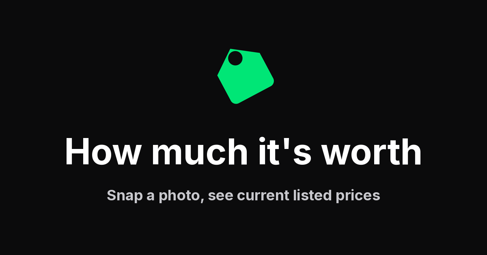

"How much it's worth" usually arrives after a number is already in the room. A shop has made an offer. A friend has quoted a sale they remember. You've seen one dramatic listing and started treating it as a fact. The risk is deciding what to do before you've seen a current listed range for the item you actually have.
That's the job  How Much Is It Worth: Scanner is built to do. Photograph the piece, confirm the identification, and look at the spread of current asks, not just the first figure you heard.
How Much Is It Worth: Scanner is built to do. Photograph the piece, confirm the identification, and look at the spread of current asks, not just the first figure you heard.
A single number can be the wrong kind of number. Face value, metal value, a shop offer, and a formal appraisal are different jobs. For most everyday keep-or-sell decisions, the useful picture is a current listed range for similar items, in a similar condition, advertised now.
The scanner gets you there from a photo. Take or upload up to three shots. The front is enough to begin. Add a mark, a date, a serial, or a label when you can. Confirm or edit the identification before prices run, so a wrong name doesn't become a wrong range.
Then you see a Worth about figure, the listed range around it, a confidence level, and the live listings behind it. You can open those listings and compare them with your item. If the data is thin, it's labelled as a rough estimate. The product won't invent a precise figure, and it isn't a certified appraisal or an offer to buy.
Want to see a current listed range for something in front of you? Snap a photo at https://howmuchisitworth.today/. The website includes one free web scan a day. Get the free iPhone app at https://apps.apple.com/app/id6832980231, with 3 free scans plus 1 a week. On Android? Check https://howmuchisitworth.today/ for the Android release.
Keep the labels in view. Worth about is a headline estimate. Listed range is the spread of current asks. Rough estimate means there weren't enough solid comps. Listed prices can sit above a final sale or a dealer offer, which is why the range is more honest than a single optimistic listing.
You can adjust condition (Good, Near Mint, Graded, and more) and watch the value update. If the range looks surprisingly high, check whether the comps are graded, boxed, or a different edition. If it looks surprisingly low, check whether a hallmark, set mark, or date was missed.
From there, how much it's worth becomes a decision, not a debate. Keep it. List it. Or get a second opinion on something rare. If you list, you can copy a ready-made listing in a tap, with Quick sale, Fair price, or Top dollar. Save the item to a collection if you want a record of the range you saw.
The scanner covers coins and banknotes, trading and sports cards, antiques, jewelry, gold and silver, watches, stamps, comics, books, vinyl, toys, handbags, sneakers, phones, cameras, games, furniture, and other household finds people actually sell. Rare one-offs get a wider range and a tip to get a professional appraisal.
If a shop offer is already on the table, a current listed range gives you context before you say yes or no. It doesn't turn the offer into an appraisal, and it doesn't guarantee a sale at the top of the range. It simply shows you what similar pieces are being asked for right now.
The app is free to start, with 3 free scans plus 1 a week. Optional Premium is $4.99 a week (no trial), or $29.99 a year with a 3-day free trial on the yearly plan only. Prices may vary by store and country.
When the conversation has already jumped to how much it's worth, see a current listed range first. Check it at https://howmuchisitworth.today/, or get the app and scan your first item free.
I also wrote a companion post on the broader wording of the same question: this companion guide.